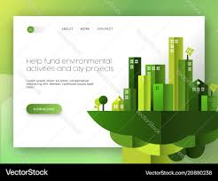

Site Plan
Sustainable Living Hub
The name was chosen to clearly reflect the website's mission to promote eco-friendly practices and sustainable living. It conveys a sense of community and action towards living greener and reducing environmental impacts.
Optional domain availability: sustainablelivinghub.com
The purpose of the website is to provide a comprehensive resource for individuals and communities interested in adopting sustainable living practices. It will offer articles, tips, and resources on reducing waste, conserving energy, sustainable transportation, and eco-friendly home choices. The goal is to inspire and empower visitors to make greener choices in their daily lives.
We have selected two main colors to align with the theme of sustainability and nature:
The website will use the following fonts:
Below are the basic wireframe concepts for both mobile and desktop views of the home page layout:
This wireframe will help guide the development of the site, showing where key content will appear in both desktop and mobile views. A sketch will visually represent the layout, showing elements like the header, content sections, and footer, and how they will adapt for different screen sizes.
